CRVI000125Yusaku Kamekura - Expo '70
Japan World Exposition, Osaka · 'Progress and Harmony for Mankind' · 1970
Japan World Exposition, Osaka · 'Progress and Harmony for Mankind' · 1970
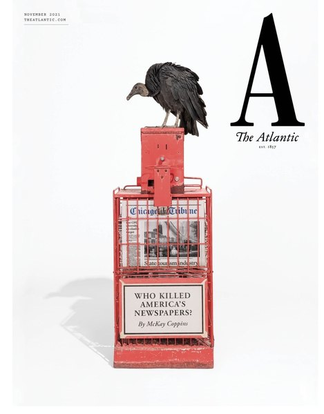
CRVI000547Oliver Munday - Who Killed America's Newspapers?
The Atlantic, November 2021 · 2021
The Atlantic, November 2021 · 2021
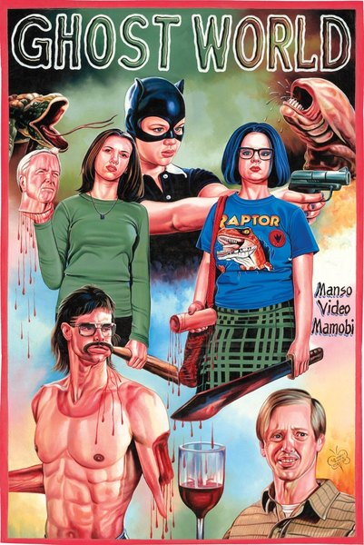
CRVI000684C.A. Wisely - Ghost World
Hand-painted Ghanaian film poster
Hand-painted Ghanaian film poster

CRVI000464Richard Turley - The Hedge Fund Myth
Bloomberg Businessweek, 15 July 2013 · 2013
Bloomberg Businessweek, 15 July 2013 · 2013

CRVI000413Redhead Kingpin & The F.B.I. - A Shade Of Red
Designer unknown · Virgin · 1990
Designer unknown · Virgin · 1990
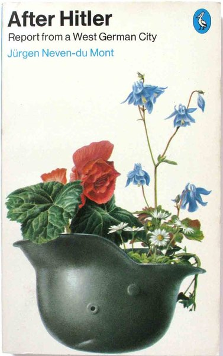
CRVI000440Unknown - After Hitler
Cover for Jürgen Neven-du Mont · Pelican
Cover for Jürgen Neven-du Mont · Pelican
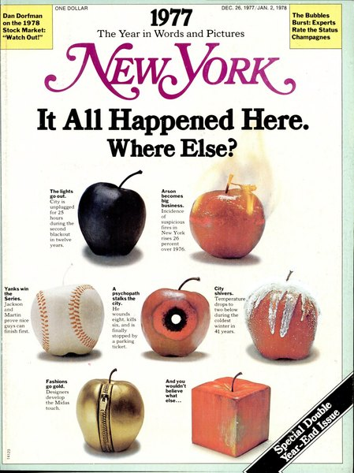
CRVI000599Unknown - 1977: It All Happened Here. Where Else?
New York, December 26, 1977 · 1977
New York, December 26, 1977 · 1977
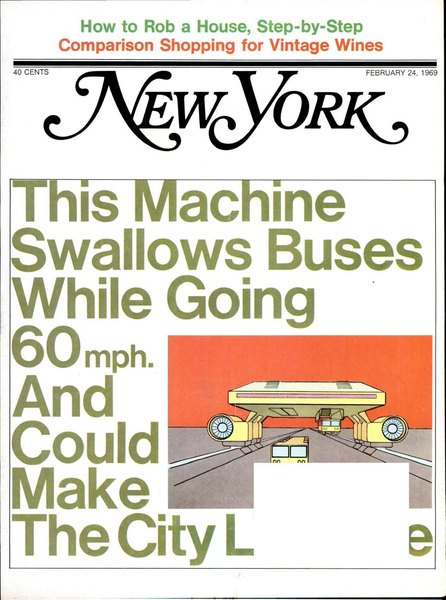
CRVI000586Unknown - This Machine Swallows Buses While Going 60 mph
New York, February 24, 1969 · 1969
New York, February 24, 1969 · 1969

CRVI000682Mr. Nana Agyq - Gummo
Hand-painted Ghanaian film poster · after the film by Harmony Korine
Hand-painted Ghanaian film poster · after the film by Harmony Korine

CRVI000675Unknown - The Apology Machine
Bloomberg Businessweek, March 18, 2019 · 2019
Bloomberg Businessweek, March 18, 2019 · 2019
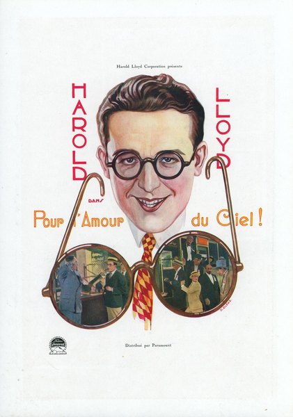
CRVI000284David Olère - Pour l'Amour du Ciel! (For Heaven's Sake)
Press book illustration · Paramount, Paris
Press book illustration · Paramount, Paris
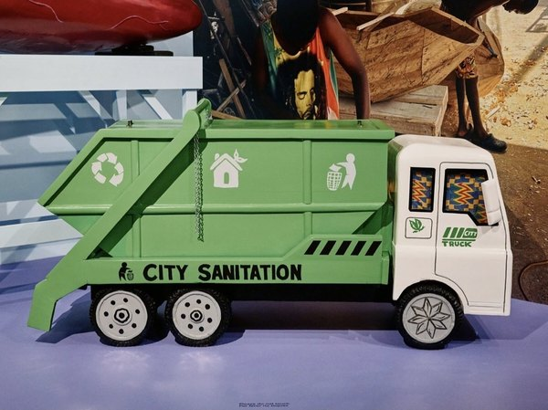
CRVI000226Unknown - Sanitation truck coffin
Ghanaian fantasy coffin · The Art Underground, Museum of International Folk Art, Santa Fe
Ghanaian fantasy coffin · The Art Underground, Museum of International Folk Art, Santa Fe

CRVI000592Unknown - Can Anybody Handle the Soaring Costs of Private Schools?
New York, March 29, 1971 · 1971
New York, March 29, 1971 · 1971

CRVI000499Leo Jung - The Longest Walk to America
The California Sunday Magazine, April 2020 · 2020
The California Sunday Magazine, April 2020 · 2020

CRVI000623Lia Kantrowitz, Kitron Neuschatz, Elizabeth Renstrom - Burnout and Escapism
VICE, December 2018 · 2018
VICE, December 2018 · 2018

CRVI000283Unknown - Japanese Pharmacy Ad
Poster
Poster

CRVI000431Camera Obscura - Underachievers Please Try Harder
Designer unknown · Elefant Records · 2003
Designer unknown · Elefant Records · 2003

CRVI000503Unknown - The Year of the Taco
Texas Monthly, November 2020 · 2020
Texas Monthly, November 2020 · 2020

CRVI000392M. Geddes Gengras - Test Leads
Designer unknown · Holy Mountain · 2012
Designer unknown · Holy Mountain · 2012

CRVI000298Snakefinger - Chewing Hides The Sound
Designer unknown · Ralph · 1979
Designer unknown · Ralph · 1979

CRVI000686Leonardo - Fantastic Planet
Hand-painted Ghanaian film poster · after the film by René Laloux
Hand-painted Ghanaian film poster · after the film by René Laloux

CRVI000048Oneohtrix Point Never - R Plus Seven
Designed by Robert Beatty · Warp Records · 2013
Designed by Robert Beatty · Warp Records · 2013

CRVI000195Unknown - Desk Flip
Reaction GIF · Panda in an office · 43 frames, 5.2s loop
Reaction GIF · Panda in an office · 43 frames, 5.2s loop
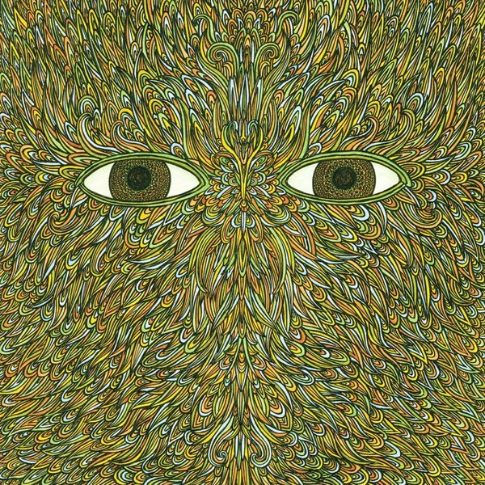
CRVI000058Flying Lotus - Pattern +Grid World
Designed by Theo Ellsworth · Warp Records · 2010
Designed by Theo Ellsworth · Warp Records · 2010

CRVI000418De La Soul - 3 Feet High And Rising
Designer unknown · Tommy Boy · 1989
Designer unknown · Tommy Boy · 1989

CRVI000428The Chills - Brave Words
Designer unknown · Flying Nun Records · 1987
Designer unknown · Flying Nun Records · 1987
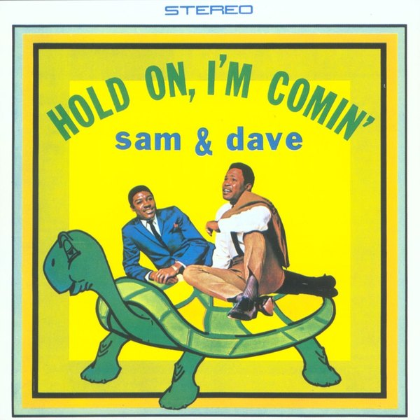
CRVI000335Sam & Dave - Hold On, I'm Comin'
Designer unknown · Stax · 1966
Designer unknown · Stax · 1966
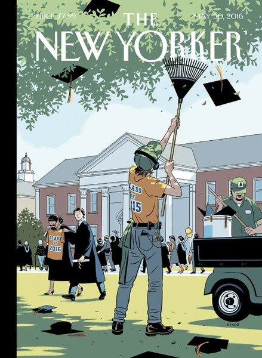
CRVI000641R. Kikuo Johnson - Commencement
The New Yorker, May 30 2016 · 2016
The New Yorker, May 30 2016 · 2016
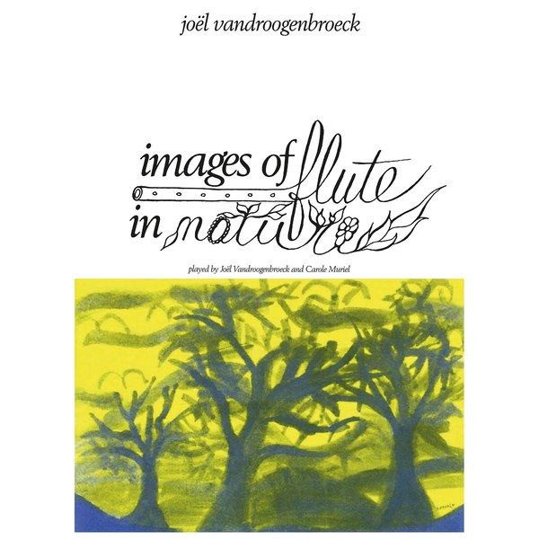
CRVI000382Joel Vandroogenbroeck - Images Of Flute In Nature
Designer unknown · Cenacolo · 1978
Designer unknown · Cenacolo · 1978

CRVI000300I Start Counting - Fused
Designer unknown · Mute · 1988
Designer unknown · Mute · 1988
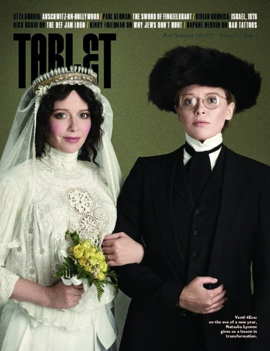
CRVI000642Luke Hayman, Shigeto Akiyama, Annabel Mehran - Yentl 4Eva
Tablet Magazine, Fall 2016 · 2016
Tablet Magazine, Fall 2016 · 2016
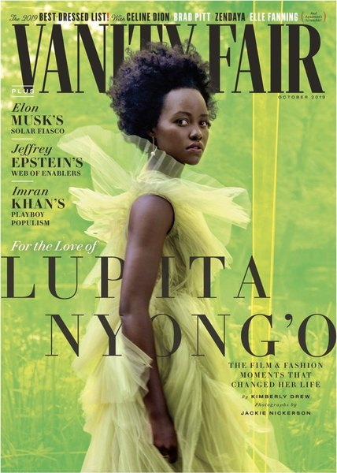
CRVI000679Jackie Nickerson - For the Love of Lupita Nyong'o
Vanity Fair, October 2019 · 2019
Vanity Fair, October 2019 · 2019
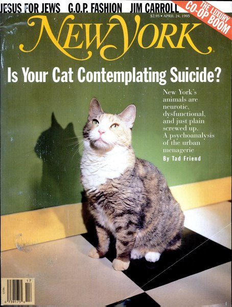
CRVI000608Unknown - Is Your Cat Contemplating Suicide?
New York, April 24, 1995 · 1995
New York, April 24, 1995 · 1995
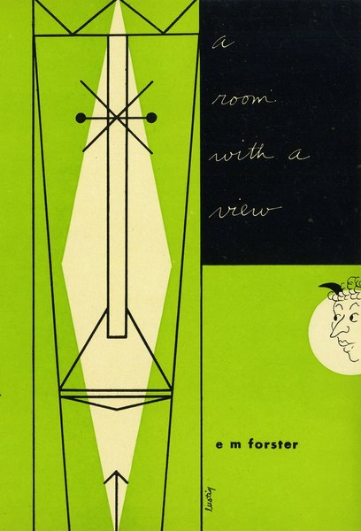
CRVI000574Alvin Lustig - A Room with a View
E M Forster · New Directions, New Classics NC5 · 1943
E M Forster · New Directions, New Classics NC5 · 1943
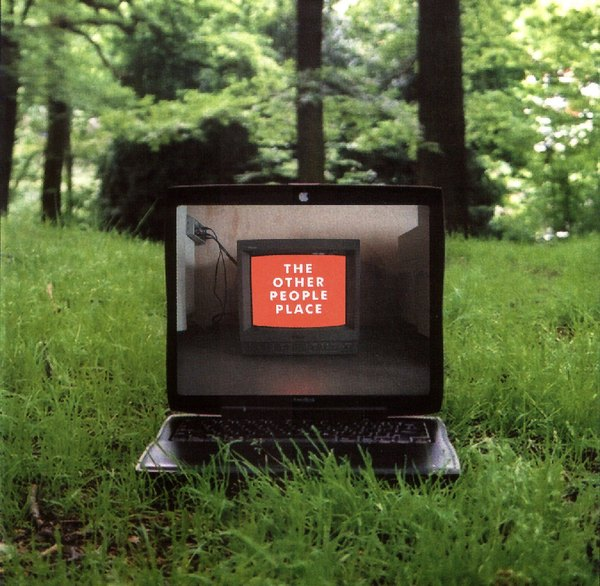
CRVI000056The Other People Place - Lifestyles Of The Laptop Café
Designed by The Designers Republic · 2001
Designed by The Designers Republic · 2001
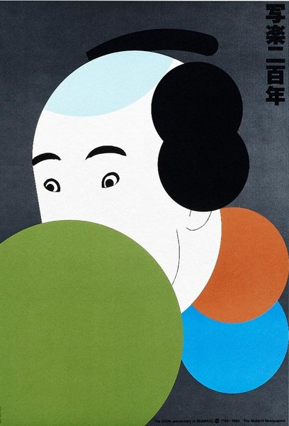
CRVI000289Ikko Tanaka - Faces
Poster
Poster

CRVI000209Unknown - First Pitch
Reaction GIF · Sister Mary Jo Sobieck · 170 frames, 5.1s loop · 2018
Reaction GIF · Sister Mary Jo Sobieck · 170 frames, 5.1s loop · 2018
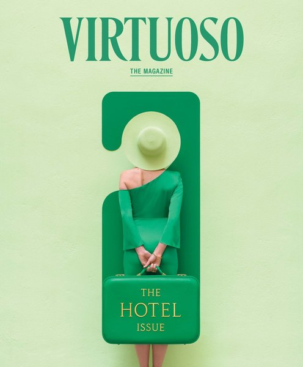
CRVI000484Anna Devís - The Hotel Issue
VIRTUOSO, July/August 2024 · 2024
VIRTUOSO, July/August 2024 · 2024
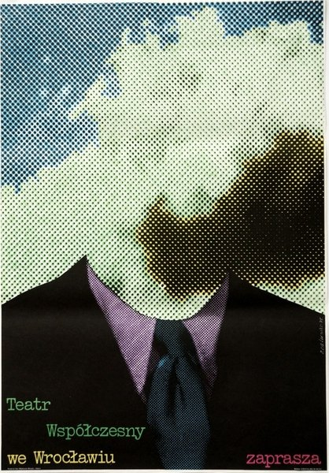
CRVI000265Roman Cieślewicz - Theater Wspolczesny in Wroclaw Invites
Theatre Poster · 1975 · 1975
Theatre Poster · 1975 · 1975
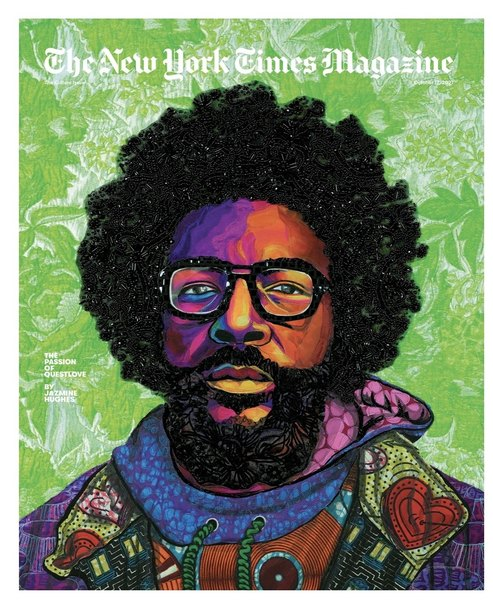
CRVI000549Gail Bichler - The Passion of Questlove
The New York Times Magazine, October 17, 2021 · 2021
The New York Times Magazine, October 17, 2021 · 2021
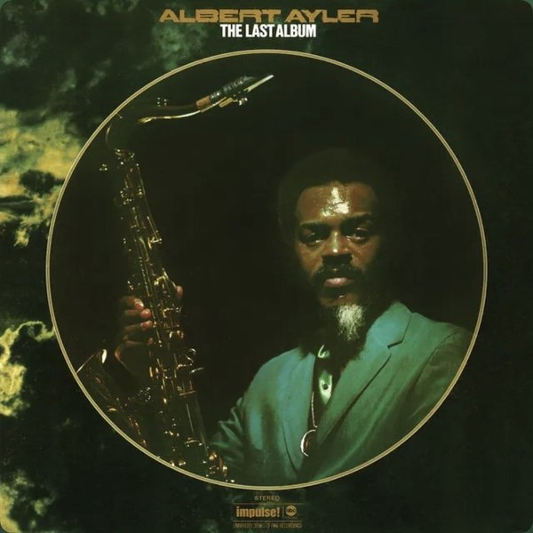
CRVI000510Albert Ayler - The Last Album
Designed by Woody Woodward Grafix · Impulse! · 1971
Designed by Woody Woodward Grafix · Impulse! · 1971
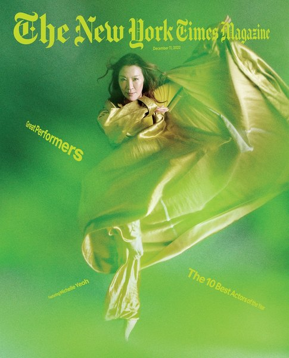
CRVI000555Gail Bichler - Great Performers: Featuring Michelle Yeoh
The New York Times Magazine, December 11, 2022 · 2022
The New York Times Magazine, December 11, 2022 · 2022
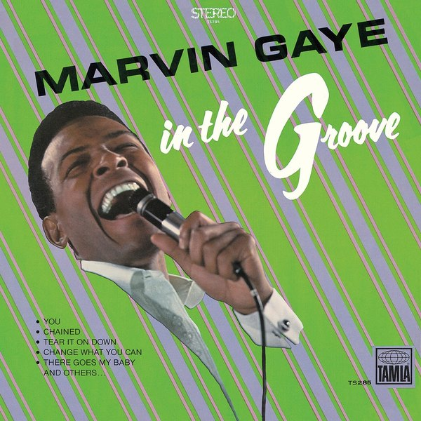
CRVI000330Marvin Gaye - In The Groove
Designer unknown · Tamla · 1968
Designer unknown · Tamla · 1968
CRVI000173Sonny Rollins - Work Time
Designer unknown · Prestige LP 7020 · 1955
Designer unknown · Prestige LP 7020 · 1955
CRVI000654Unknown - Coral
Vice, August 2014 Lifestyle · 2014
Vice, August 2014 Lifestyle · 2014
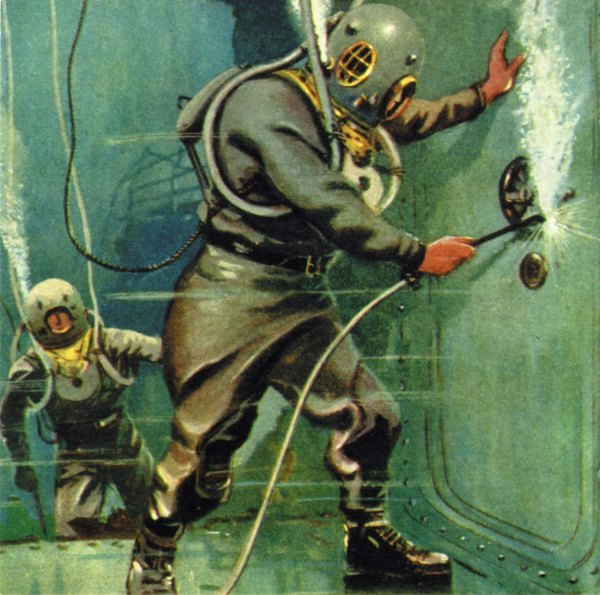
CRVI000019Two Lone Swordsmen - Stay Down
Designed by Haywire, James Woodbourne · Warp Records · 1998
Designed by Haywire, James Woodbourne · Warp Records · 1998

CRVI000202Unknown - Oh No
Reaction GIF · Abraham Simpson, The Simpsons · 51 frames, 5.1s loop
Reaction GIF · Abraham Simpson, The Simpsons · 51 frames, 5.1s loop
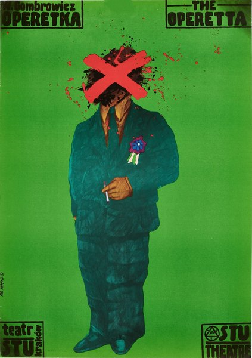
CRVI000292Jan Sawka - Operetka (The Operetta)
Jan Sawka · Witold Gombrowicz, Teatr STU
Jan Sawka · Witold Gombrowicz, Teatr STU
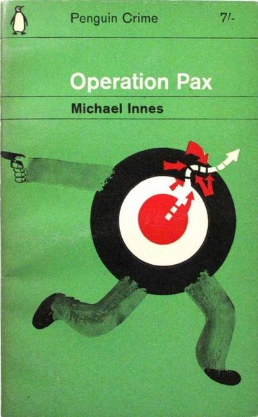
CRVI000458Alan Aldridge - Operation Pax
Cover for Michael Innes · Penguin Crime
Cover for Michael Innes · Penguin Crime
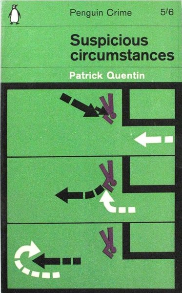
CRVI000460Alan Aldridge - Suspicious Circumstances
Cover for Patrick Quentin · Penguin Crime
Cover for Patrick Quentin · Penguin Crime
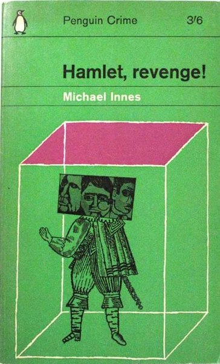
CRVI000459Alan Aldridge - Hamlet, Revenge!
Cover for Michael Innes · Penguin Crime
Cover for Michael Innes · Penguin Crime

CRVI000156Kazumasa Nagai - Design Forum - Matsuya Ginza
Designed by Kazumasa Nagai · 1981
Designed by Kazumasa Nagai · 1981
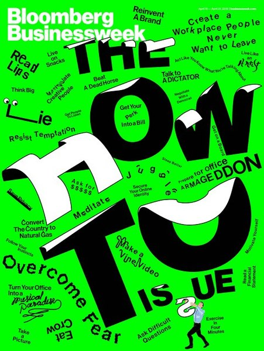
CRVI000474Unknown - The How-To Issue
Bloomberg Businessweek, April 15 – April 21, 2013 · 2013
Bloomberg Businessweek, April 15 – April 21, 2013 · 2013
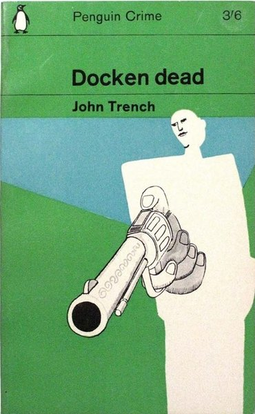
CRVI000416Alan Aldridge - Docken Dead
Cover for John Trench · Penguin Crime
Cover for John Trench · Penguin Crime
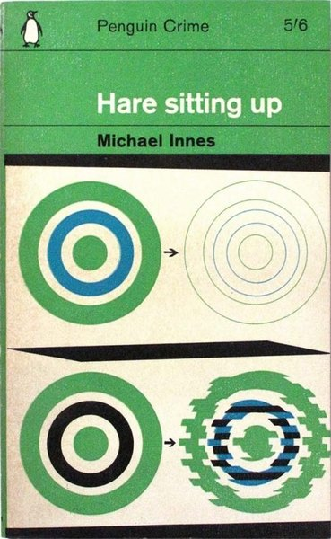
CRVI000375Alan Aldridge - Hare Sitting Up
Cover for Michael Innes · Penguin Crime
Cover for Michael Innes · Penguin Crime

CRVI000526Cindy Wehling - Reemergence
High Country News, May 2023 · 2023
High Country News, May 2023 · 2023
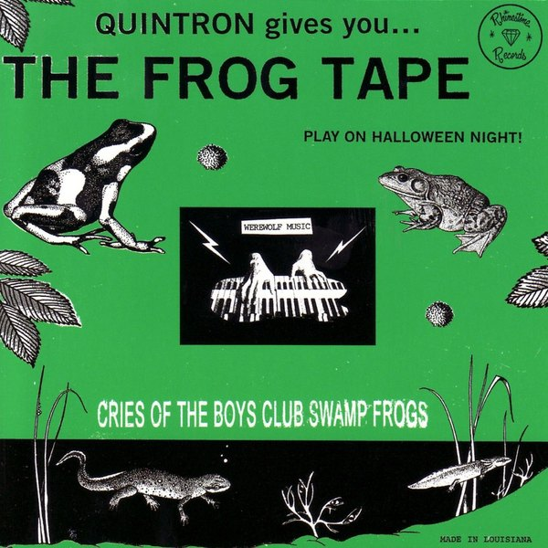
CRVI000379Quintron - The Frog Tape
Designer unknown · Skin Graft · 2005
Designer unknown · Skin Graft · 2005
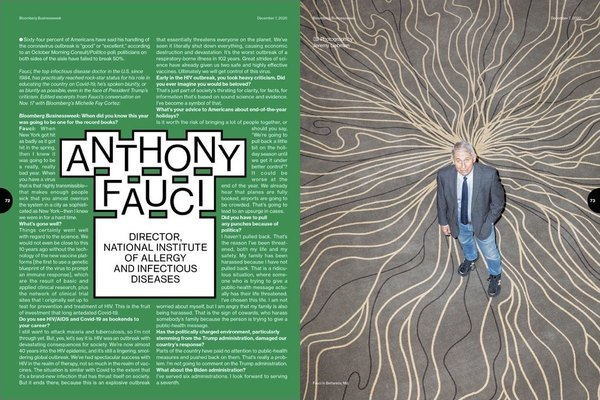
CRVI000509Unknown - Anthony Fauci
Bloomberg Businessweek, 7 December 2020 · opening spread · 2020
Bloomberg Businessweek, 7 December 2020 · opening spread · 2020
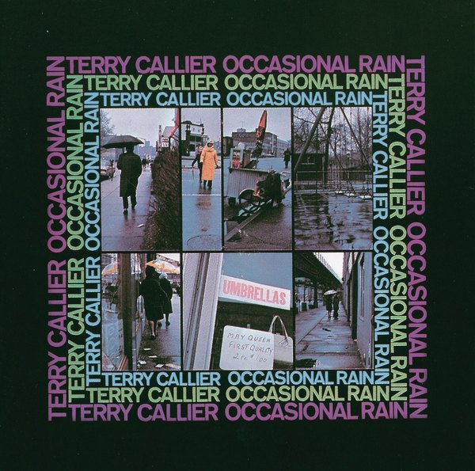
CRVI000341Terry Callier - Occasional Rain
Designer unknown · Coder · 1972
Designer unknown · Coder · 1972

CRVI000021Negativland - A Big 10-8 Place
Designed by Ian Allen, Mark Hosler · Seeland · 1983
Designed by Ian Allen, Mark Hosler · Seeland · 1983
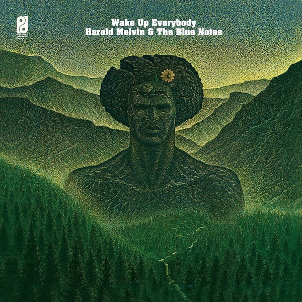
CRVI000393Harold Melvin & The Blue Notes - Wake Up Everybody (feat. Teddy Pendergrass)
Designer unknown · International · 1975
Designer unknown · International · 1975

CRVI000042Tropic Of Cancer - Restless Idylls
Designed by Oliver Smith · 2013
Designed by Oliver Smith · 2013
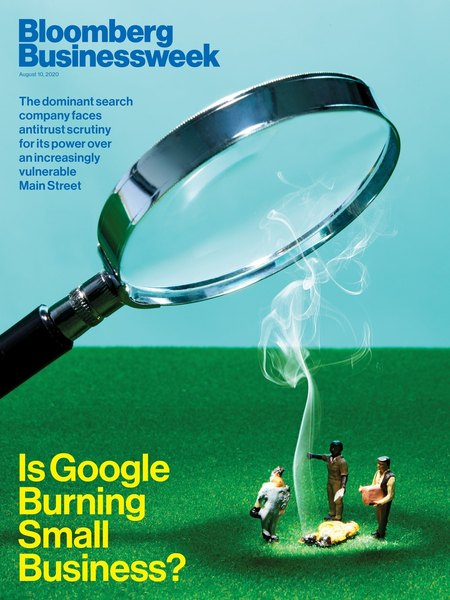
CRVI000496Chris Nosenzo - Is Google Hurting Small Business?
Bloomberg Businessweek, August 10, 2020 · 2020
Bloomberg Businessweek, August 10, 2020 · 2020

CRVI000306Haruomi Hosono - Philharmony
Designer unknown · Yen · 1982
Designer unknown · Yen · 1982
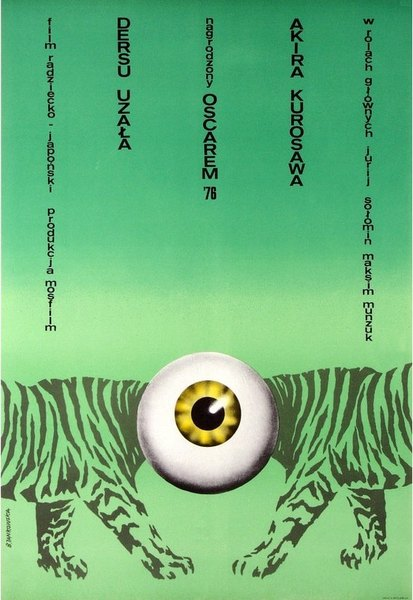
CRVI000249Bozena Jankowska - Dersu Uzala
Film Poster Designed By Bozena Jankowska · 1976 · 1976
Film Poster Designed By Bozena Jankowska · 1976 · 1976

CRVI000573Alvin Lustig - Three Lives
Gertrude Stein · New Directions, New Classics NC3 · 1945
Gertrude Stein · New Directions, New Classics NC3 · 1945
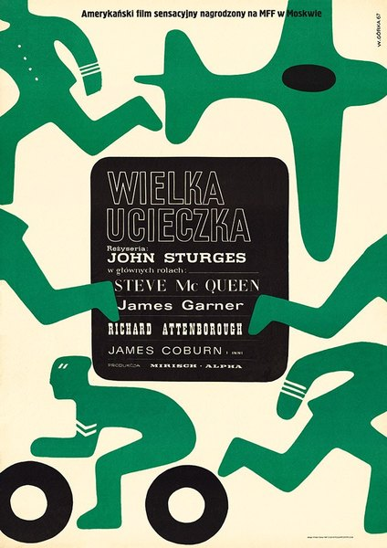
CRVI000261Wiktor Gorka - The Great Escape
Film Poster Designed By Wiktor Gorka · 2018 · 2018
Film Poster Designed By Wiktor Gorka · 2018 · 2018

CRVI000094Various - Artificial Intelligence
Designer unknown · Warp Records · 1992
Designer unknown · Warp Records · 1992
CRVI000034Teams - Dxys Xff
Artwork by Jónó Mí Ló · AMDISCS · 2011
Artwork by Jónó Mí Ló · AMDISCS · 2011
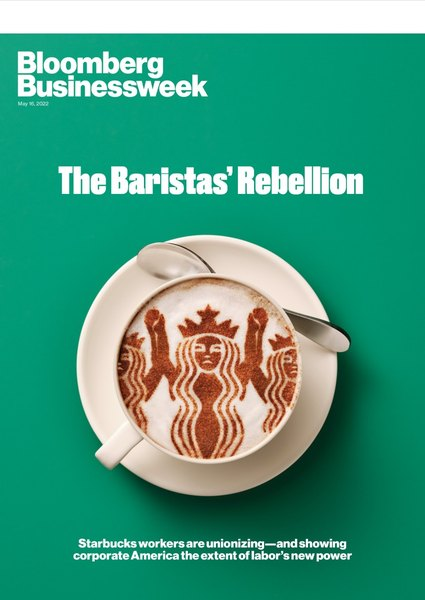
CRVI000557Somnath Bhatt - The Baristas' Rebellion
Bloomberg Businessweek, May 16, 2022 · 2022
Bloomberg Businessweek, May 16, 2022 · 2022
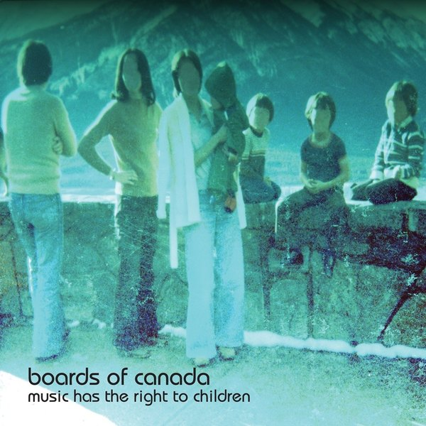
CRVI000008Boards Of Canada - Music Has The Right To Children
Designed by Boards Of Canada · Warp Records · 1998
Designed by Boards Of Canada · Warp Records · 1998
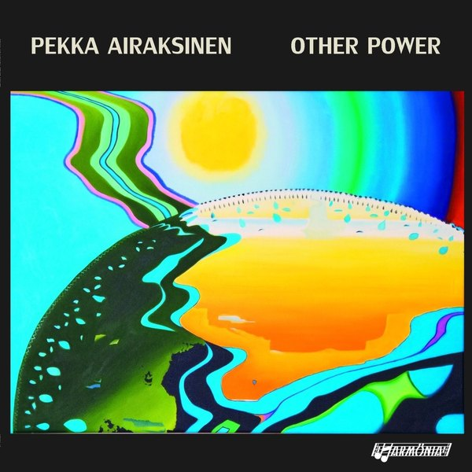
CRVI000302Pekka Airaksinen - Other Power
Designer unknown · Hormonia · 2012
Designer unknown · Hormonia · 2012
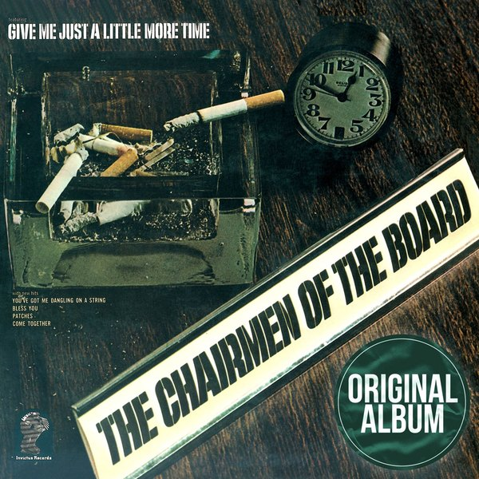
CRVI000334Chairmen of the Board - Give Me Just A Little More Time
Designer unknown · Invictus · 1970
Designer unknown · Invictus · 1970

CRVI000381Joel Vandroogenbroeck, Mac Prindy & Marc Monsen - Biomechanoid
Designer unknown · Sofoursound Library · 1980
Designer unknown · Sofoursound Library · 1980
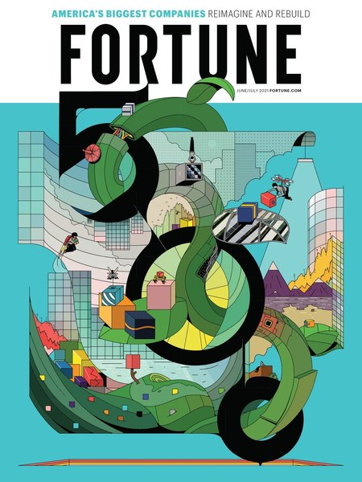
CRVI000539Peter Herbert - Fortune 500
Fortune, June/July 2021 · 2021
Fortune, June/July 2021 · 2021

CRVI000305Yellow Magic Orchestra - BGM
Designer unknown · Alfa · 1981
Designer unknown · Alfa · 1981
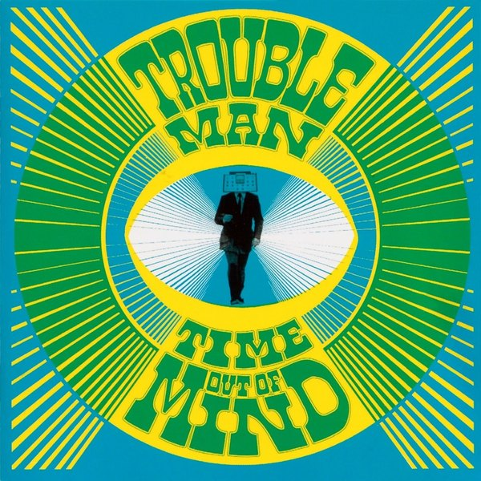
CRVI000238Troubleman - Time Out Of Mind
Designer unknown · Far Out Recordings · 2004
Designer unknown · Far Out Recordings · 2004
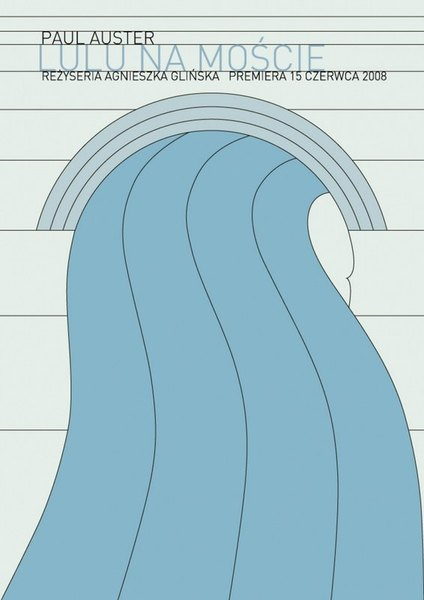
CRVI000271Robert Czerniawski - Lulu on the Bridge
Theatre Poster · 2008 · 2008
Theatre Poster · 2008 · 2008

CRVI000384Mark Isham - Vapor Drawings
Designer unknown · Windham Hill · 1983
Designer unknown · Windham Hill · 1983
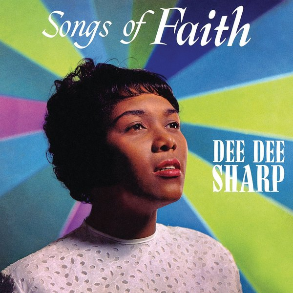
CRVI000183Dee Dee Sharp - Songs of Faith
Designer unknown · Cameo · 1962
Designer unknown · Cameo · 1962

CRVI000307Der Plan - Normalette Surprise
Designer unknown · Ata Tak · 1981
Designer unknown · Ata Tak · 1981
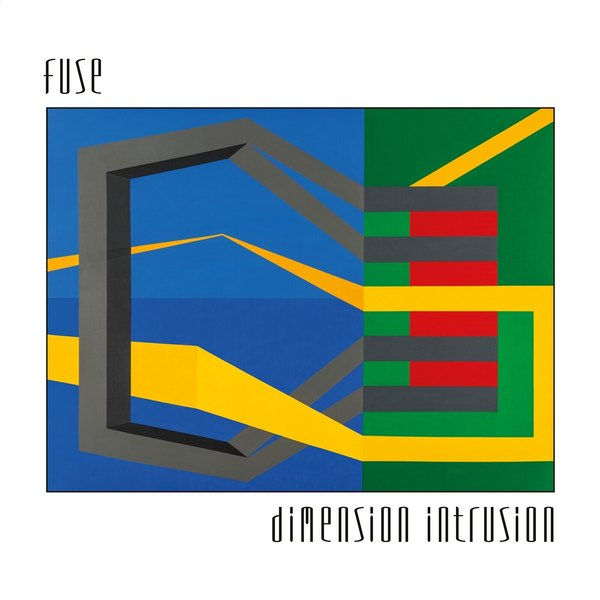
CRVI000089FUSE - Dimension Intrusion
Designer unknown · Plus 8 Records · 1993
Designer unknown · Plus 8 Records · 1993
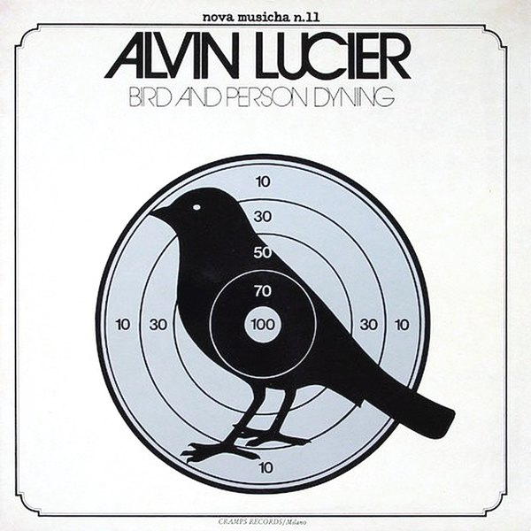
CRVI000377Alvin Lucier - Bird And Person Dyning
Designer unknown · Cramps · 1976
Designer unknown · Cramps · 1976
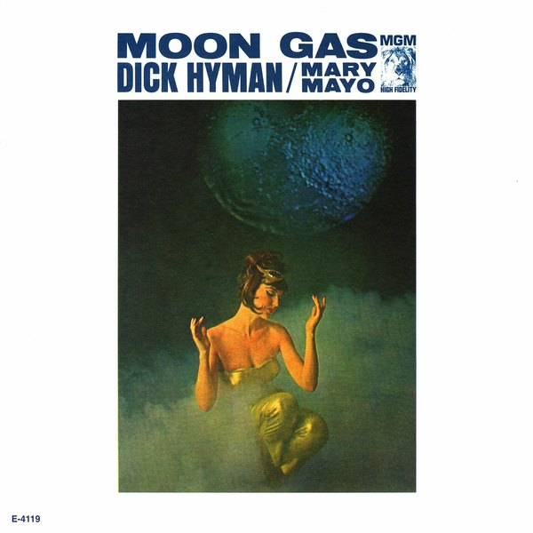
CRVI000294Dick Hyman & Mary Mayo - Moon Gas
Designer unknown · MGM Records · 1963
Designer unknown · MGM Records · 1963
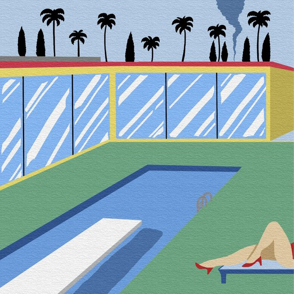
CRVI000023NxxxxxS - Fujita Scale
Artwork by Ivan Peev · Headcount Records · 2014
Artwork by Ivan Peev · Headcount Records · 2014

CRVI000409Whodini - Escape
Designer unknown · Jive · 1984
Designer unknown · Jive · 1984
CRVI000495Justin Patrick Long - Pattern Player
Vanity Fair, October 2020 · 2020
Vanity Fair, October 2020 · 2020

CRVI000277Andrzej Pągowski - State of Fear
Film Poster · 1989 · 1989
Film Poster · 1989 · 1989
CRVI000538Chris Nosenzo - How to Lose $20 Billion* in 2 Days
Bloomberg Businessweek, April 12, 2021 · 2021
Bloomberg Businessweek, April 12, 2021 · 2021

CRVI000045Various - Artificial Intelligence II
Artwork by Phil Wolstenholme, The Designers Republic · Warp Records · 1994
Artwork by Phil Wolstenholme, The Designers Republic · Warp Records · 1994
CRVI000134Shigeo Fukuda - Shigeo Fukuda
Exhibition, Keio Department Store SF Art Gallery, 23–28 May 1975 · 1975
Exhibition, Keio Department Store SF Art Gallery, 23–28 May 1975 · 1975

CRVI000108Masuteru Aoba - A.D. 3000 ⋯ Energy-Addicted Man?
エネルギーに頼り過ぎた3000年の人間？
エネルギーに頼り過ぎた3000年の人間？
CRVI000451Derek Birdsall - Creativity
Cover for P. E. Vernon · Penguin Education · 1972
Cover for P. E. Vernon · Penguin Education · 1972